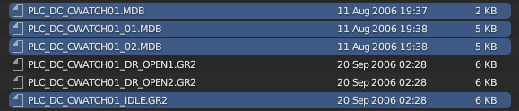
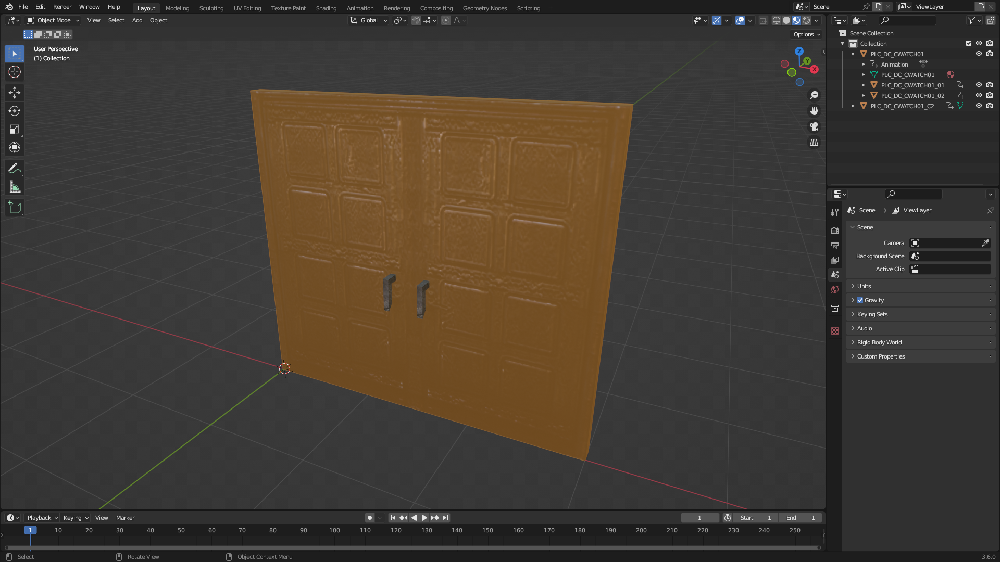

Importing a complex door into Blender
A complex door is a door with more than one part, like for example a double door.
For this tutorial, we are going to use as an example the double door at row 336 in doortypes.2da. We need to extract these MDBs from Data/NWN2_Models.zip:
- Base part: PLC_DC_CWATCH01.MDB
- Attached part: PLC_DC_CWATCH01_01.MDB
- Attached part: PLC_DC_CWATCH01_02.MDB
Note that we said that it was a double door, however, there are three MDBs. This is because one MDB must be used as a dummy base part (in our example PLC_DC_CWATCH01.MDB) and the other MDBs as attached parts (in our example PLC_DC_CWATCH01_01.MDB and PLC_DC_CWATCH01_02.MDB, which are the real door parts).
We also need to extract at least one of the following animations from Data/lod-merged.zip:
- PLC_DC_CWATCH01_DR_OPEN1.GR2
- PLC_DC_CWATCH01_DR_OPEN2.GR2
- PLC_DC_CWATCH01_IDLE.GR2
Note that NWN2 also uses a skeleton for doors, but the Blender add-on allows us to work with animations applied directly to door parts without the need for a skeleton, which we think makes things easier.
Steps to import the complex door
-
Go to File > Import > Neverwinter Nights 2 (.mdb/.gr2)

-
Select the three MDB files and one of the animations from the file browser and click Import MDB/GR2.

Note: To select several files you need to hold
CTRLwhile clicking.Note: The import function will search in the game data files for the model textures and extract them for you.
Observations
This is a screenshot of the door imported with the idle animation.

Note how the attached parts PLC_DC_CWATCH01_01 and PLC_DC_CWATCH01_02 are children of the base part PLC_DC_CWATCH01.
In object mode, select the base part PLC_DC_CWATCH01, go to the panel NWN2 in the object properties, and observe that the Base Part is checked.